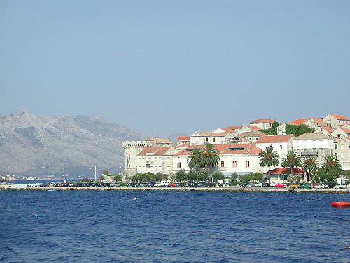
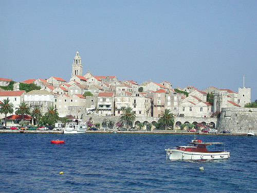
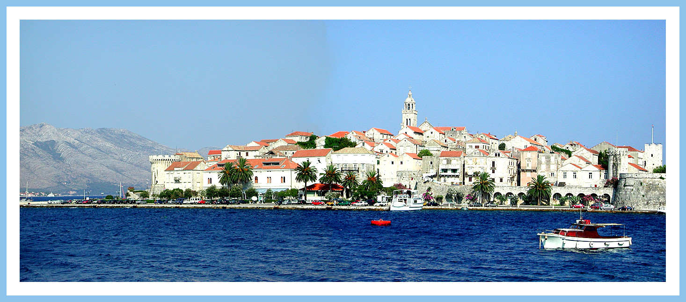

Bas de page
Accueil
Menu 01 - La page des images
Menu 02 - La page des images de Ferrari
Panorama fait avec GIMP
Les photos de départ
Image de droite

Image de gauche

Panorama fait à partir de ces 2 images

Haut de page